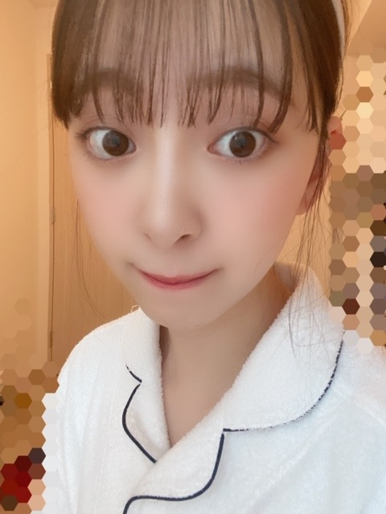

2020/0428Tueいつかのはなし
こんばんは
たくさんおすすめの曲を教えてくださり
ありがとうございます ☾
みなさんのおすすめ曲を聴いていて
初めて知れた曲もありましたし
素敵な曲にもたくさん出会えました
最近は寝る前に
歌詞を見て曲を聴いてMVを見て
曲や歌詞の意味を考えたりしています☺︎☺︎

･*☽

部屋着でダラダラしていてもなーと思い
メイクをささっとして
カチューシャをしてみました!
ちょっと気分が上がりました! 単純!

最近はですね、
語学の勉強をちょいとしたり
あとは、気になってたアニメを見始めたり
してます
YouTubeでもいろいろ観てますね〜

堀家はこうしていろんなおかずを
自分のプレートに盛り付けて
箸の混じり合いが無い食事方法に
変わりました!
一つのものを一緒に食べるのは
よくないみたいです
あと、手の消毒液が洗面所に置かれました☺︎
朝から寝る前までなるべく窓を開けて
換気もしています
みなさんも、出来ることから始めましょう!

あ、お知らせです
5月23日発売
アップトゥボーイVol.292
表紙巻頭をやらせていただきます!
5月27日発売の2nd写真集から
未公開カットをバーン!と20Pも
掲載していただきます☺︎
わーい☺︎
是非写真集と共にご覧ください꙳✧˖°
でははは
2020/04/28 19:48


コメント(444)
マスクマンです・・・(笑)
せっかくゆっくりしてたのに、ブログ用に軽く変身・・・かな❓️
ありがとね❗️(笑)
やっぱりみおなは、こういう感じ・・・
後ろでまとめて、顔回りをスッキリ・・・
このブログの、５枚目の写メは、僕がみおなの握手会に頻繁にお邪魔していた頃のスタイル・・・
かわいいよ、みおな❗️❗️(笑)
カチューシャは、なかったけどね・・・(笑)
でもほんと、実物のみおなもこのまんまで、実際に会ったときの、顔の小ささ、そして、肌の白さと張り、ツヤ・・・
ピカピカなところ・・・(笑)
写真だから盛ってるとか、加工してるとかじゃなくて、ほんと、このまんまだもんね❗️(笑)
あー、また会いたいな・・・
握手会、また開催されるようになったら、会いに行ってもいいかな❓️(笑)
写真集、もちろん買いますよ❗️❗️❗️(笑)
前回の1stの時も、通常版と、セブンの限定版の両方ゲットしたし、今回もね❗️(笑)
すべてのバリエーションを揃える❗️(笑)
1stでは、あどけなさ、無邪気さを残した感じの作りだったように感じたけど、今回はどういう仕上がりになってるのか・・・
アップトゥボーイ観て、想像を膨らませるよ❗️(笑)
みおな+アップトゥボーイと言えば、僕としてはやっぱり、郡上八幡でのグラビア・・・
２年前の2018年2月号・・・
みおなは、こういう風景にもほんと、溶け込むよね・・・
やっぱりみおなのルーツはここ・・・
この町並み・・・
素朴な衣装を着こなしながらも、真っ赤なワンピースもさらりと・・・
品がいいね・・・
みおなは、すべてにセンスがある・・・
みおなにとってアイドルって、絶対天性のもの・・・
ここまでコツコツ進化させてきて、これからはさらに円熟させていくレベルに達したのかな・・・
もっともっと、感性を磨いて・・・
今振り返れば、755で、君に贈る花がない、の歌詞についての解釈をお話ししてくれたあの頃、すでにずば抜けた感性を持ち合わせていたんだけど、これからは更なる高み・・・
レベルを目指して・・・
僕も気付けていない、みおななりの感じ方をまた聞かせてほしい・・・
みおなとは何か通じるものがあるんだよね、きっと・・・
テレビでもライブでも、みおなを見て、あぁ、何かあったのかな、とか、ちょっと調子悪そうだな、とか、なんとなくね・・・
人前で、笑っていたとしても・・・
分かるような気もするから・・・
これからも側で、しっかり見守っていくから・・・
自信を持って、活動してほしい❗️❗️
それじゃ、またね❗️❗️(笑)
お出かけしなくても女子は忘れちゃだめだね！
未央奈のおすすめしてくれた曲、
片っ端からダウンロードしたよ！
スピッツの正夢、チャトモの例えば、が特に好きだった☺︎
家庭内でも感染予防の工夫必要だよね
取分け形式なら、ビュッフェみたいで楽しめるし
一石二鳥だね☺︎
表紙おめでとう！！
見なきゃ〜˙ᵕ˙
写真集届くの待ちきれない！
ブログが更新されるたびに癒されてます。
アップトゥボーイと写真集絶対買うよ
曲の歌詞を見て意味がわかるとより一層感動したりしますよね！共感です！
カチューシャすごく似合ってます！今季のアニメは何を観ていますか？
コロナ対策をすごく徹底してますね！見習います！
今は治るまで待機ですね...！
次も楽しみにしてます！
家に居る時も充実した生活してて凄いですね！
特に食事のスタイル面白いですね！家でバイキングみたいな方式､ウチもそうして貰いたいなって思ったぐらいです｡
そして相変わらず他人への見え方を意識する姿勢｡本当に尊敬します｡
その見え方を意識する姿勢について質問です｡
Q相手に良い印象を持ってもらうために未央奈さんはどのような事を普段から意識してるのですか？どうしても自分がめんどくさがっちゃう所があるので知りたいです｡
いつも可愛いカチューシャしてるなって思ってました！
オススメのカチューシャありますか？
メイクも参考にさせてもらってます！
リズムやノリで聴いていた歌も
歳を重ねると歌詞の意味や曲を
しみじみ感じながら聴くように
なりました
時間や心にゆとりがあると
色んなことが考えられますね(^_^)
未央奈さんの写真
モザイクのかけ方がおしゃれですね
こういう丁寧なところが大好きです
最後の写真を見てニヤニヤしてます
お食事の写真もありがとう
アップトゥボーイ
楽しみにしています(^_^)/
いつも、お気遣いありがとうございます
頑張ってねー
私も 麗 見終わったばっかりなの！
韓ドラってハマりやすいよね、字幕で見ちゃうけど目が疲れがち
IUちゃんめちゃくちゃ可愛いよね！チマチョゴリの色合いとかもすごく可愛い！物語の最初の方は絵面も明るくて大好きなんだけど終盤になるにつれて色合いが暗くなっていくの見てて苦しくなる
ワン・ソも好きだけど私はワン・ウンが好きだなぁ
やっぱりカチューシャが１番似合うね☺️
可愛すぎる❤️
アルコール消毒液足りてますか？
アルコール、マスク、ウェットティッシュ等品切だから困るよね。
とにかく、基本は手洗いだよ！
またね。
しっかり換気、除菌徹底して
平和な日常が戻ってくることを願うばかりです。
live行きたいなあ大好きです。
写真集めっちゃ楽しみであと１ヶ月まちどおしいです。
最近はコロナで暇すぎてヘッドホン買って乃木坂の歌聞きまくってます（笑）
暇な時何してますかー？
人気だったり結構気分上がるみたいね！
対策だけでなく色々な意味で、
できることをして過ごさないとね
自分も筋トレとかして
身体は動かしているけど、
気が付くとひげや髪がボサボサに…笑
気を付けます、、
パジャマカチューシャももちろんだけど
モバメのみおながめっちゃきれいで…
写真集、早く見たいー！
写真集もUTBも予約済みですよ、届くのがとても楽しみです。
それと好きな学園ドラマの話ですが...
「花より男子」「花より男子2」と、その続編の「花のち晴れ」が華やかで好きですね。
やっと二人の距離が近づいても、またすぐに離れてしまうっていう、そんなやきもきする恋模様もいいですね。
「魔女の条件」「中学聖日記」「高校教師」の禁断の愛がテーマのドラマも好きでした。
それと「３年A組」の菅田さんのセリフも、胸に深く刺さりましたね。
前のブログに書いたんですが、反映されてないかも知れないのでこちらにも書いてみました。
それではお休みなさい。
いろんな対策されてて良いですね！
うちにもアルコールがあったり換気したりと対策してますよ〜
まいやんからも発表あったけど、早くコロナが収束して卒コンができると良いですね。
アップトゥボーイ楽しみです。買います！
ごはんがいつも美味しそうです。
食べるのっていいですよね！
私がオススメした曲、聴いてくれたかな？とっても、感動すると思う！
未央奈ちゃんのおうちのごはん、工夫がすごい！真似しちゃいます！
普通の日々が1日でも早く戻ってきますように
未央奈ちゃん大好き
暇がず〜と続くと頭おかしくなっちゃいそう
こんな時だから普段できないことをするのは良いことだね。
堀家しっかり対策してますね
感心です。
写真集発売前にアプトゥボーイで未公開シーン公開だなんていいんですか？嬉しすぎます。
絶対絶対買います！
でははは
白部屋着と白カチューシャ姿の未央奈ちゃんも
とても綺麗だ
「しあわせの保護色」のMVのときもカチューシャ
してたね
何だね！
4時間半くらい前にYouTubeで「しあわせの保護色」
を何度も聴いてたよ！ ネットで歌詞を探してNOTEに
メモしてた歌詞を見て試聴してた。詞の意味を考えながら視聴してみたけど、俺の場合は視聴することに集中しすぎて詞の意味を考えるのを忘れちゃったかな
でははは
自分は休みが長すぎてず〜っとダラダラしちゃってる!ｗ
堀家は家の中でも感染対策してるんだね!
自分は地方だから結構ルーズな感じだな〜
いつも更新ありがとう!
これからも頑張ってね!応援してる！
by未央奈推しのブラックコーヒー
なんだかバイキングみたいな感じで良いなー笑
未央奈ちゃんはどこの語学勉強してるのかな？
それとアニメも気になるなー☺️笑
ちなみに僕も最近イタリア語の勉強頑張ってますＯ(≧∇≦)Ｏ 語学勉強の時にオススメの勉強方教えて欲しい！！
カチューシャかわいい☺️
私ももっと予防ちゃんとしていこうって思ったよ〜
どんなアニメを観ているのかな…？？
体調に気をつけてね
次も楽しみにしてます！
私も未央奈ちゃんのお薦め、何曲か聞きました。最近の歌詞は、小説・文学作品と同様にアイディアにあふれていて素晴らしいですね。
今日は私の月一回の通院の日なので、病院に行きました。いつものように混んでいるかと思ったら、ガラガラに空いてました。皆さん感染を恐れているのでしょうか？新型の疑いがある様な事を言っている患者さんもいたようです。私は大丈夫か？その答えは2週間経ってみないとわからないです。
ではまた。
こんな時だからこそ余計に音楽って大切だなと感じてます。
前回のコメントでWANIMAの花火とか、GReeeeNの扉とか口笛、涙空とかをオススメの曲として上げさせて貰ったけど聞いて貰えたかな？
聞いてもらえていたならぜひ感想をお願いします
早くテレビで未央奈みたいな
あと歌番組での乃木坂も
まいやんの卒業も近いからね
もっともっとまいやんとの思い出作れるようにしてね！
応援してます！
未央奈に会いたいよぉ〜
コロナ収まってからどこかで見かけたら絶対声かけるね！
視力悪いから目つかるかわからんけどねw
見つけて声掛けた時はよろしくね！
次も楽しみにしてまーす
大好きっ！
バイバイっ！
・どういたしまして！ドラえもん音頭も是非未央奈のプレイリストに。笑
・俺は瞑想アプリを寝る前に使うかな。時間ないときは一分瞑想を選んでする( ͡° ͜ʖ ͡°)
気になったアニメ？AKB0048かな？(懐かしくね？。笑)
・大逆転裁判を始めたが、まだ個性的なキャラが出てないから楽しみにしながら、アウチをいじめる。笑
・明日は筋トレ超回復日でお休みだから、映画を観まくりたい(^^)バイオとワイスピシリーズも、GWまでには全部見ておきたいなー
後ラ・ラ・ランドがあったから観てみるよ( ͡° ͜ʖ ͡°)
カツカレーテイクアウトしたいーおすすめテイクアウトなにかないかなー
おやすみおなー
アニメのおすすめは最近で言ったらやっぱり鬼滅の刃！
東京喰種もおもしろいよ！
あとはー、短くていいのはあの日見た花の名前を僕達はまだ知らない
良かったら見てねー
堀ちゃんなりのコロナ対策ですね！僕もコロナに負けないようにしっかり対策して今度、元気な姿で堀ちゃんに会いに行きたいです！僕も歌詞の意味やリズムをしっかりとってみたり、考えてみたりして普段から曲聞いてます！語学は何勉強してるんだろう？気になります！英語だったら力になれますよ！大学で外国語を習っているので！堀ちゃん！おやすみなさい！
とくに先週の１０話は神展開の連続だった・・・
いよいよ制作開始から１２年間の集大成のグランドフィナーレまであと３話で映画エピソード３と
時系列が重なりはじめていく興奮必至・・・。
女性主人公アソーカも最高に魅力的だし、そのYouTubeでもハイライトとダイジェストを毎週公開してるから観てみて下さい・・・！？
映画の空白が埋まっていく面白さが最高！！！
それじゃ体調に気をつけて頑張りましょう。
○Through the night(happy ver) /shin Giwon Piano(IU music piano collection)
可愛くアレンジされているのですが、凄く切なさがあって個人的に一番好きでした。
○Blueming / shin Giwon Piano
○bbibbi /shin Giwon Piano
○Twenty-three / shin Giwon Piano
○feel special / shin Giwon Piano
○pshyco / shin Giwon Piano
○fiesta / shin Giwon Piano (jazzぽくなっています)
未央奈ちゃんの好きなアレンジがございましたら嬉しいです！未央奈ちゃんと未央奈ちゃんの大切な方が幸せでありますように。
とくに先週の１０話は神展開の連続だった・・・
近年の映画続三部作を超えて来てる！ルーカス監督もファイナルシーズンを絶賛したらしいし・・・。いよいよ制作開始から１２年間の集大成のグランドフィナーレまであと３話で映画エピソード３と
時系列が重なりはじめていく興奮必至・・・。
女性主人公アソーカも最高に魅力的だし、そのYouTubeでもハイライトとダイジェストを毎週公開してるから観てみて下さい・・・！？
映画の空白が埋まっていく面白さが最高！！！
それじゃ体調に気をつけて頑張りましょう。
ブログ更新ありがとうございます。
前回、たくさんの曲がリストアップしてあって、つられて私もたくさん書いてしまいましたが、自分の名前が落ちいていました。５７１番あたりの「匿名」は私のことです。ご迷惑をかけて申し訳ございません。これに懲りず、これからもよろしくお願いします。
さゆにゃんの卒業と最後のブログ、４期生の個人ブログ開始と新４期生のリレーブログ開始、何やら大きな変換期を迎えているようなそんな感じですね。
大変な毎日‥‥‥。乗り越えていきましょう。
コメントする